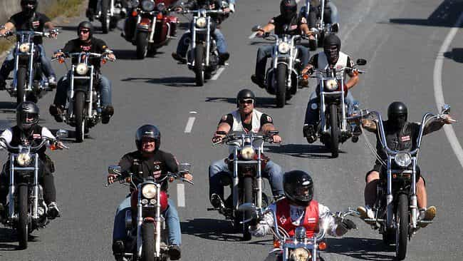

< < < Back
A Motorcycle Will Help You Attract More Women – Return Of Kings
Despite my other failed game endeavors, I have some techniques that have proven themselves to be perennial. Throughout time, men have acquired accessories to woo and seduce women. Anything that helps a man reach poosy paradise is considered a good buy (barring chloroform). Whether it be an article of clothing, jewelry, or even a dog, these things take on a whole new level of value to them. Sometimes, things don’t appear like they will help you with girls, but do. Other times, all you can think about is how this potential possession could help you. If you are looking for a new angle to take your game to the next level, fear not for I have the answer: a motorcycle.
Riding a bike is incredibly fun in itself. Every man who has two wheels thoroughly enjoys it and feels a part of a larger community of riders who love the open air and freedom. A road that evokes hatred from someone who commutes there daily suddenly becomes a fulfilling journey when the helmet is on and the throttle is being twisted.
But there are other perks to riding that deserve special attention: The effect it has on women.
Anyone can call this “Biker Game,” but calling it that does it the disservice of removing it as an ingrained part of your life which you carry with you forever. If you take it to 11 and tattoo your whole body, run drugs and guns, and buy yourself a clubhouse, then you may call it Biker Game. For me, and the majority of people who own a bike, that is not necessary.
If you don’t already own a motorcycle, then you need to do some searching. Mine is a Harley with 1200CC’s. Anything above 600CC’s will do, because the bike needs enough power to be able to do its magic. Instead of being overwhelmed with the wide selection of variants, stick to one brand and go from there.
For the sake of comfort for you and your passenger, as well as masculine appeal, a cruiser or touring bike is ideal with their large displacement V-twin engines. Stay away from the cuck-scooters like sport bikes and mopeds. Once you have selected which bike you like, taken the necessary riding courses and received your license, you are ready to break the levee of Snatchtown.
The Vibes
“I just looove someone who rides”
A biker cultivates an air of mystery. What comes immediately to mind when you think of “biker” is an aloof free-spirited man who traverses the country. He rides because he wants to, and likes to be in control over his machine. Without the motorcycle, the biker loses his identity, and with it—his allure.
Aside from the ultra delusional feminist who lives in her own bubble, bikers are thought of as being entirely male. That is a good thing, because an activity that is exclusive to men will carry with it the “penis monopoly” effect, where the activity/hobby by default oozes testosterone. The same effect can be seen with American football, Rock n’ Roll, and working construction. Riding a motorcycle is as masculine as fighting a bear shirtless.
It doesn’t stop there. What you wear when riding is just as important as having the bike itself. Leather jackets and denim pants work in tandem to create an aura of manliness that surrounds you both on and off the bike. Leather is mainly worn by riders for its protective properties, but the added aesthetic appeal is certainly a bonus. Not only that, but the smell of leather only further adds to your masculine presence.
Sometimes when upping the level of her attraction for you, all that’s needed is you smoothly riding up to her place, dismounting, taking your helmet off and placing it under your arm, walking up to her slowly, pulling her close with one arm while letting her get a whiff of you, and saying in a low voice “lets go for a ride.” That’s it. Tingle city.
Carry yourself as if you are imposing your will on the world around you. The earth doesn’t rotate under your bike by itself, your bike’s back wheel is what makes it spin.
Physical Stimulation
She’s definitely warmed up
What if I told you that the motorcycle itself can build attraction in your girl without you saying anything? Does it game her as you sleep? Does it tell her how cool of a guy you are when you’re not around? No, it massages her nether regions.
Think of the motorcycle as a means of foreplay. Even if she is in no sexual mood, sex will be on her mind after hopping on the back with you taking the helm. Girls love the vibration the bike causes to their clitoris and all the while this is happening, a pavlovian association in her mind is connecting you with her vibrating vagina—essentially making her biology betray her by whispering in her ear and saying, “feels good doesn’t it? You should totally breed with this guy!”
This is the reason I was suggesting before that your motorcycle be at least 600CC’s. 600 is good, but more power equals more arousal.
Logistics

As with any foray into the bedding of girls, having bad logistics can be a serious cockblock if not managed carefully. Picking up a girl in public and taking her for a ride is thrilling, but going from bike-ride to cock-ride can leave some questions.
Here’s an example: My routine when employing biker game was to go into the approach with the goal of setting up a riding date where you pick her up and take her somewhere, whether it be an ice cream stand, or whatever. I used this as the date to increase attraction, while riding on the bike biologically made her frothing to begin with in order to always keeps her in the mood. Then, I offer to take her back to my hot tub with a few drinks, and segue into the bedroom. Rinse, repeat.
At the bare minimum, you should be using the bike’s power to guarantee you sex on the second date. Both dates should include riding, with the first always ending in a kiss attempt. If you cannot go for the bang by bringing her back to your house, you should aim to do it at her place. All roads must lead to sex, or her riding privileges end.
Conclusion
Do not doubt the poon-harpooning power of the humble motorcycle. Lifting weights, learning a martial art, making money, and improving your style all give you a better hand to play in seduction. While all these are imperative for any man who reads any of these types of sites, something as simple as getting on two wheels can be easily overlooked in your arsenal.
Read More: 3 Reasons Why You should Ride A Motorcycle